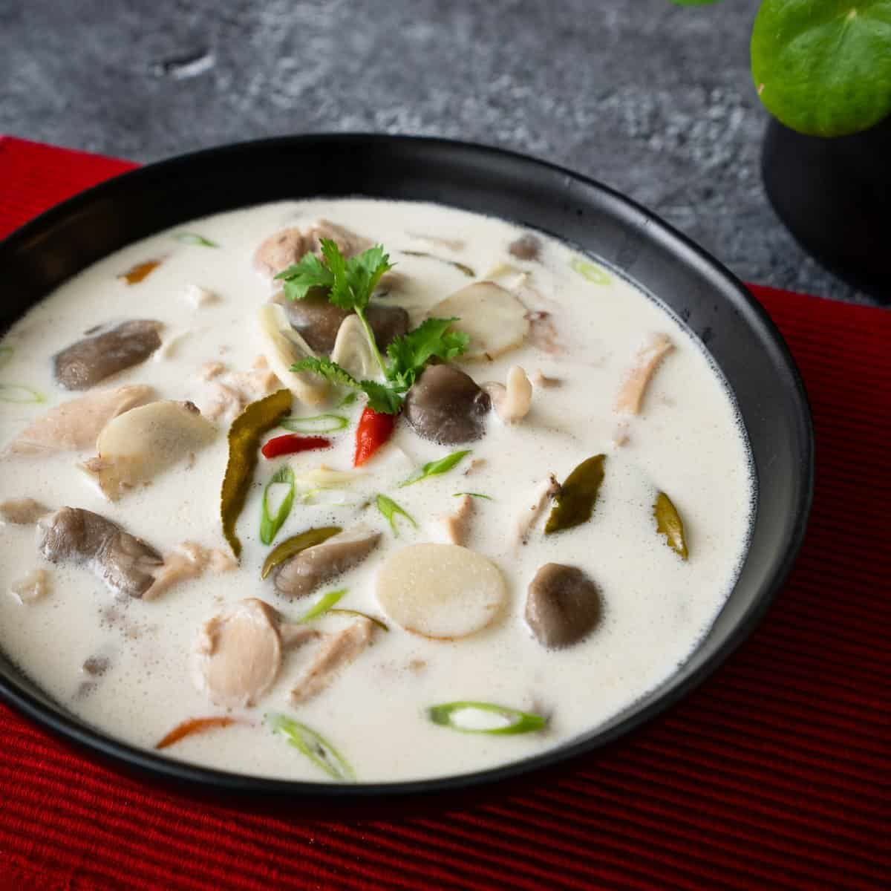

Tom Ka Gai Soup

Description
Tom Ka Gai soup is a common Thai dish that brings savory flavors together with hints of coconut, lemongrass, and lime.
It typically comes with some sort of protein, like chicken, and can also be served over rice.
Ingredients
- Boneless chicken breast
- Vegetable oil
- Coconut milk
- Water
- Ginger root
- Fish sauce
- Lime juice
- Cayenne pepper
- Ground tumeric
- Green onion
- Cilantro
Steps
- Cut chicken into thin strips and saute in oil for to 2 to 3 minutes until the chicken turns white.
- In a pot, bring coconut milk and water to a boil. Reduce heat. Add ginger, fish sauce, lime juice,
cayenne powder and turmeric. Simmer until the chicken is done, 10 to 15 minutes.
- Sprinkle with scallions and fresh cilantro and serve steaming hot.